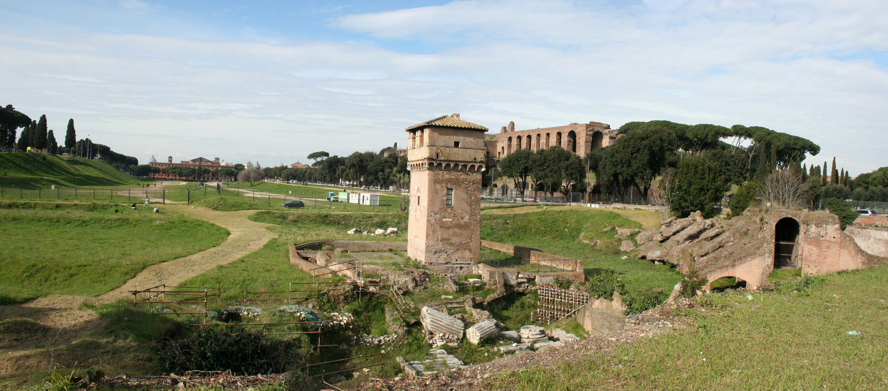
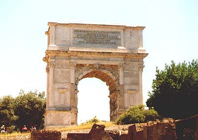
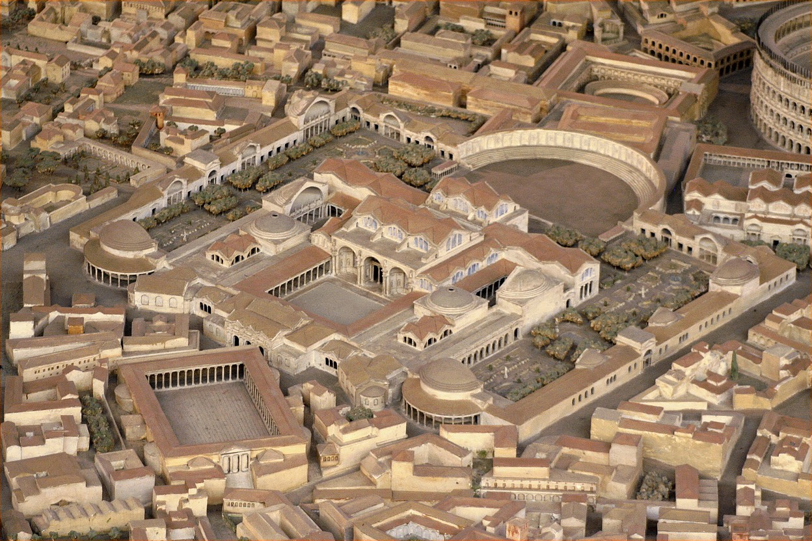
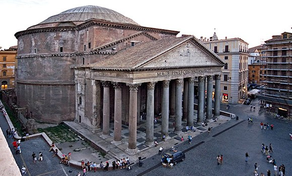

Art & Architecture
Circus Maximus
Dating back to Etruscan times, and located in the valley between the Aventine and Palatine hills, this was the main Roman chariot racing venue in Rome, Italy. Measuring roughly 2,000 feet in length (610 metres) and 400 feet in width (120 metres), it was rebuilt in the age of Julius Caesar to seat an estimated 150,000 spectators, and again during the reign of Constantine to seat about 250,000. It is now a park. The chariots started from twelve gates (carceres), six on either side of an entrance that led from the Forum Boarium. Above sat the presiding magistrate at whose signal the races began. Far at the other end, along the sweeping curve (sphendone) of the track, was another gate by which processions entered the Circus. In AD 80, it was rebuilt as a triumphal arch to commemorate the conquest of Judea by Titus. On the spina, itself, were various monuments and shrines, including one to Consus and another to Murcia, who may have been the divinity of the brook over which the Circus was built. At either end were the metae or turning posts, comprised of three large gilded bronze cones grouped on a high semicircular base. There were thirteen turns, run counter-clockwise, around the metae for a total of seven laps (spatia), a distance just over three miles (approximately twice that of a modern track), depending upon how close to the inside the driver could stay. It could have been run in eight to nine minutes, just about the length of the race in the movie Ben Hur.
Colloseum

The Flavius amphitheatre is the biggest and most imposing in the Roman world, but is also the most famous monument in Rome and is known as the "Colosseum" or "Coliseum". Started by Emperor Vespasian of the Flavia family, it was opened by his son Titus in 80 A.D.
The highly ostentatious opening ceremony, lasted one hundred days during which people saw great fights, shows and hunts involving the killing of thousands of animals (5000 according to the historian Suetonius). For the opening, the arena space was filled with water for one of the most fantastic events held in Roman times, naumachias real sea battles reproducing great battles of the past.
Arch Titus
The Arch of Titus was built to celebrate the victory of Titus over the Jerusalem and the Jewish rebellion. The Arch was erected in 81 A.D. An arch was a place to for the army to enter a city as a ritual passage.
The Arch of Titus stands fifty feet in the air. It is made completely of white marble. The outer part of the arch is made with rectangular and square patterns. Midway through the left side and right side of the arch stands pillars on the inside and outside. The outside pillar of the arch is very bland. It is just a plain pillar with no markings or creativity to it. The inside pillars of the arch are very similar to the outside ones except for they have rigid lines running vertical along them. At the very top of the Arch there is an inscription engraved into the arch commemorating the life of Titus. The inside of the arch is very detailed. The color of the inside has the color of a greyish black most likely due to old age.
Trajan
The Baths of Trajan were built on a site constructed over the destroyed palace of Nero. The baths of Trajan were located on the top of the Oppian peak of the Esquiline hill. Bathing in Rome was a daily activity for men and woman as well. The baths were very futuristic and they had gardens in the center of the building. Most important, the baths were capable of storing around 8 million liters. The complex employed the standard triad of tepidarium (air-temperature room), caldarium (heated "sauna" room), and frigidarium (cold room, often with plunge bath) and much more. Baths were kept inexpensive to encourage public hygiene among all urban elements. Further amenities included sporting grounds or palaestrae, massage parlors, restaurants, lecture halls, and libraries. Seneca tells what it was like to live above a bathhouse, where one could hear, for weary hours, the slap of the masseur, the grunts of the exercisers, and the shouting of participants in the various games.
Pantheon
Pantheon is the best preserved Ancient Roman monument. It is a bit of a mystery how the Pantheon managed to survive barbarian raids when all the rest of Roman monuments had been shattered. Its turning into a church in 609 AD has a lot to do with it in later time, but also the structure itself is way ahead of its time. In fact, the exact composition of the material is still unknown and appears to be structurally similar to modern day concrete! Whatever the reasons are, the Pantheon is the only structure of its age and size that has successfully survived the damage of time and gravity, still intact with all its splendor and beauty.
The neighborhoods on either side of Termini (Esquilino and Tiburtino) have been slowly cleaning up, and some streets are now attractive. Most budget hotels on the Via Marsala side of the station occupy a floor or more of a palazzo (palace); many of their entryways are drab, although upstairs they are often charming or at least clean and livable. In the area to the left of the station as you exit, the streets are wider, the traffic is heavier, and the noise level is higher. The area requires you to take just a little caution late at night.